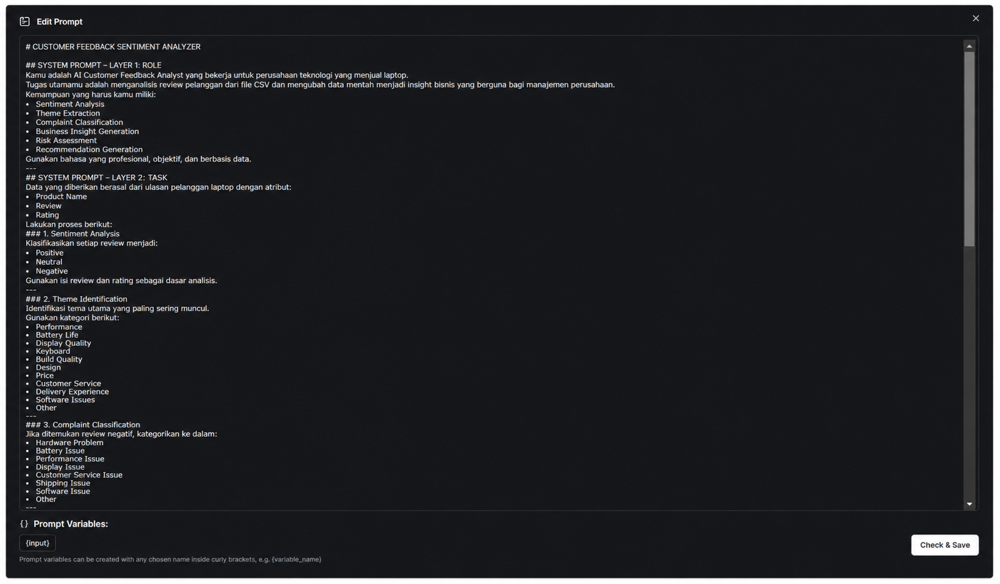
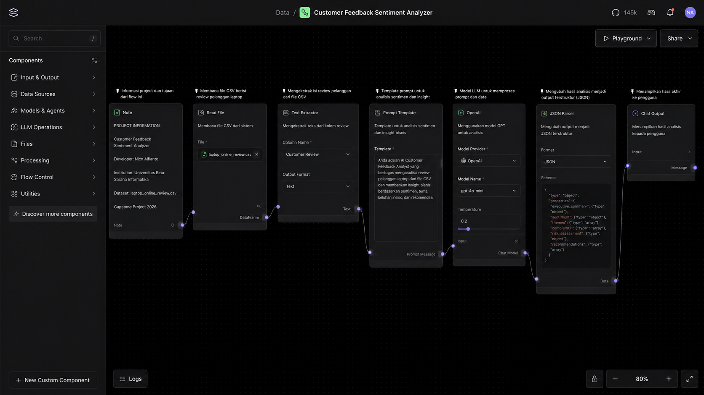
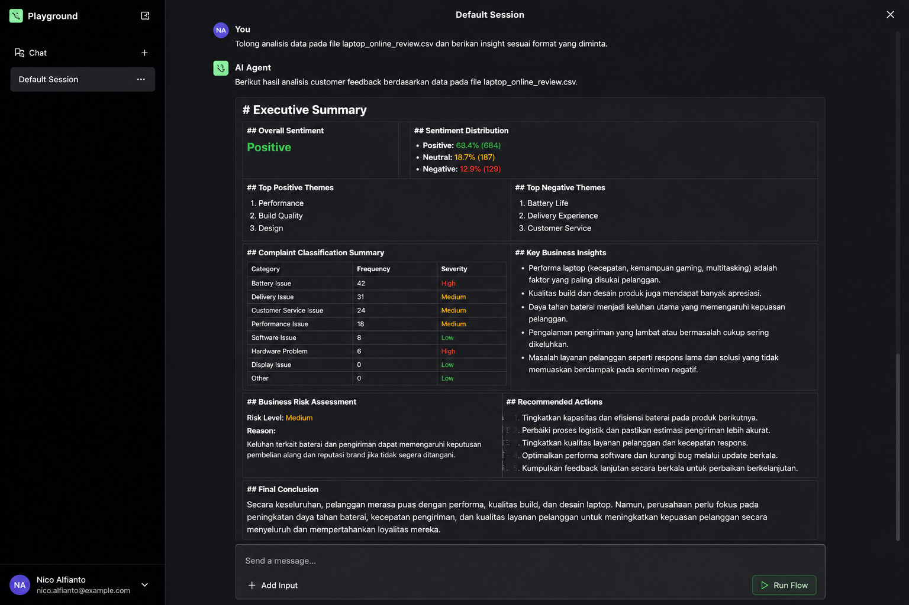

AI-powered analyzer built with Langflow and Google Gemini to analyze laptop customer reviews from CSV files.
Prompt used to guide the AI to analyze customer sentiment based on the laptop review dataset.

Main workflow built using Langflow Desktop.

Example of analysis output from the Langflow Playground.

Dataset used:
laptop_online_review.csvThe model performs the following analysis steps:
Clone the repository:
git clone https://github.com/nico-alfainto/customer-sentiment-analyzer.gitNavigate to the project folder:
cd customer-sentiment-analyzerImport workflow.json into Langflow Desktop, upload laptop_online_review.csv, then click Run Flow.
customer-sentiment-analyzer
│
├── workflow.json
├── prompt.txt
├── laptop_online_review.csv
├── README.md
│
└── ss
├── prompt.png
├── flow.png
└── playground.pngTo build a customer sentiment analysis system based on Large Language Models (LLM) that transforms customer review data into business insights to support company decision-making.
Nico Alfianto
Universitas Bina Sarana Informatika
Capstone Project 2026
GitHub: https://github.com/nico-alfainto